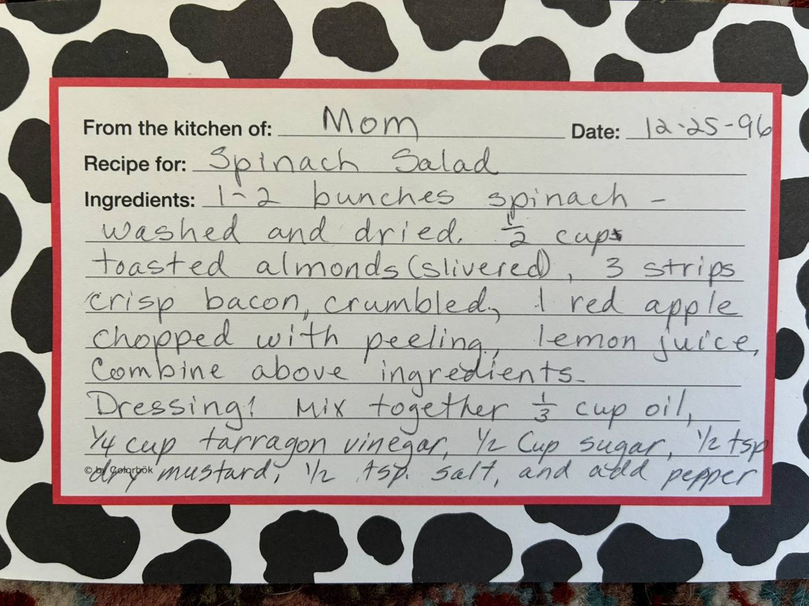
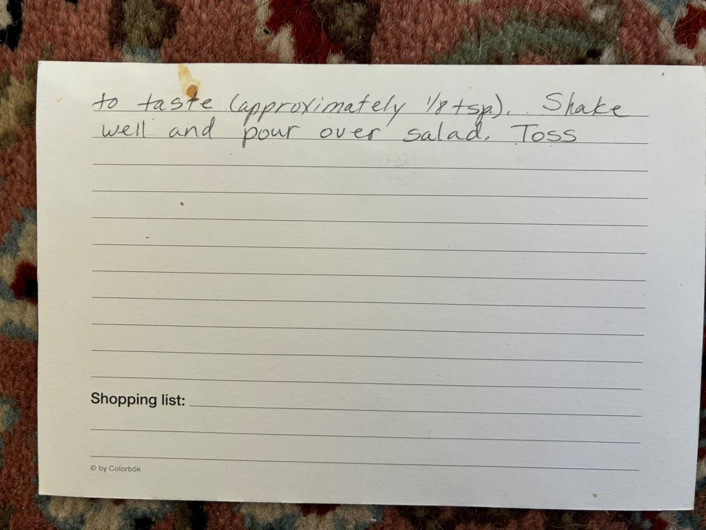

Salads
Spinach Salad
From the kitchen of Mom
OvenNone
DressingShake in a jar


Mom's original card (front and back) · tap to enlarge
Ingredients
Salad
Dressing
Method tap a step to mark it done
- Combine the spinach, toasted almonds, crumbled bacon, chopped apple and lemon juice.
- Dressing: mix together the oil, tarragon vinegar, sugar, dry mustard, salt and pepper.
- Shake well, pour over the salad and toss.